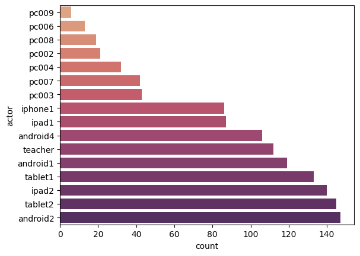

csv_files = ['../example_statements_1.csv', '../example_statements_2.csv', '../example_statements_3.csv',
'../example_statements_4.csv']Read xAPI statements stored in a csv file
The methods in this notebook implement the functionalities for reading a collection of xAPI statements stored in a
csv file
The libraries used:
As an example, in this package we provide three csv files containing a few hundreds of xAPI statements.
Load statements from file
Let’s start by reading the csv file. This first example uses ; as a delimiter, but usually it’s a ,. We will shortly define a function that takes care of all the differences between xAPI statements datasets.
if Path(csv_files[0]).exists():
statements = pd.read_csv(csv_files[0], index_col=None, delimiter=';').reset_index(drop=True)
else:
print("The specified file does not exist. Creating an empty DataFrame...")
statements = pd.DataFrame()
statements.head()| timestamp | lrs_id | actor name | verb id | verb display | object id | object name | result | |
|---|---|---|---|---|---|---|---|---|
| 0 | 2022-08-02T14:44:34.4429540Z | 6148511b448b2d059a63e424 | AAA430802 | http://activitystrea.ms/schema/1.0/start | {'en-us': 'started'} | https://wekit-community.org/stepID=TS-ef86ff46... | {'en-us': 'Action Step 3'} | NaN |
| 1 | 2022-08-02T14:44:34.0702380Z | 6148511b448b2d059a63e424 | AAA430802 | http://id.tincanapi.com/verb/viewed | {'en-us': 'viewed'} | http://MirageXR_Image_133039249801494090.jpg | NaN | NaN |
| 2 | 2022-08-02T14:44:34.0626310Z | 6148511b448b2d059a63e424 | AAA430802 | http://activitystrea.ms/schema/1.0/listen | {'en-us': 'listened_to'} | http://characterinfo/TS-ef86ff46-70b6-472a-93d... | NaN | NaN |
| 3 | 2022-08-02T14:44:34.0477250Z | 6148511b448b2d059a63e424 | AAA430802 | https://wekit-community.org/verb/met | {'en-us': 'met'} | resources:// char:Woman_C | {'en-us': 'char:Woman_C'} | NaN |
| 4 | 2022-08-02T14:43:28.0360420Z | 6148511b448b2d059a63e424 | AAA430802 | http://activitystrea.ms/schema/1.0/start | {'en-us': 'started'} | https://wekit-community.org/stepID=TS-a5780c27... | {'en-us': 'Action Step 2'} | NaN |
Ideally we want to have a more readable version of the content. We want to have three columns named actor, verb and object that contain the statement information in a readable format. We also would like to have the timestamp information as a datetime object, and we do not care about IDs, as they are usually random strings which are not needed in the data analysis. The function import_csv does all of this for us.
import_csv
import_csv (csv_file:Union[str,pathlib.Path], index_col:int=0, delimiter:str=',', quotechar:str='"')
Reads a csv file and perform some processing to make the data easier to read as well as easier to process afterwards. Returns a pandas Dataframe
| Type | Default | Details | |
|---|---|---|---|
| csv_file | typing.Union[str, pathlib.Path] | Filename of the csv with the data | |
| index_col | int | 0 | The index column |
| delimiter | str | , | the column delimiter |
| quotechar | str | ” | Quoting char. Ignore delimiter between this character |
| Returns | DataFrame | The imported dataframe with all the xAPI statements |
Let’s use the function we just defined to reload the dataframe and check that it works as expected:
statements = import_csv(csv_files[0], index_col=None, delimiter=';')
statements.head()| timestamp | actor | result | verb | object | |
|---|---|---|---|---|---|
| 0 | 2022-08-02T14:44:34.4429540Z | AAA430802 | NaN | started | Action Step 3 |
| 1 | 2022-08-02T14:44:34.0702380Z | AAA430802 | NaN | viewed | None |
| 2 | 2022-08-02T14:44:34.0626310Z | AAA430802 | NaN | listened_to | None |
| 3 | 2022-08-02T14:44:34.0477250Z | AAA430802 | NaN | met | char:Woman_C |
| 4 | 2022-08-02T14:43:28.0360420Z | AAA430802 | NaN | started | Action Step 2 |
Just to make sure, let’s repeat the process for the other files. In some cases the function can be called with slightly different arguments, depending on the specific format of the file. For example, for the next file we specify a quote character and use a different delimiter
statements = import_csv(csv_files[1], index_col=None, delimiter=',', quotechar='"')
statements.head()| timestamp | actor | object description | result | verb | object | |
|---|---|---|---|---|---|---|
| 0 | 2022-06-24T08:46:28.169Z | 336078 | {'en-US': 'Pause/Leave app'} | {"completion":true} | pause app | Pause |
| 1 | 2022-06-24T08:42:38.636Z | 336078 | {'en-US': 'Return to app'} | {"completion":true} | Return to app | Return |
| 2 | 2022-06-24T08:42:30.775Z | 336078 | {'en-US': 'Pause/Leave app'} | {"completion":true} | pause app | Pause |
| 3 | 2022-06-24T08:42:10.209Z | 336078 | {'en-US': 'Account 1s1115 logged in'} | {"completion":true} | Log In | Access app |
| 4 | 2022-06-23T09:14:19.815Z | 370445 | {'en-US': 'Pause/Leave app'} | {"completion":true} | pause app | Pause |
Another file has additional columns that can be interesting, such as language
statements = import_csv(csv_files[2], index_col=None, delimiter=',')
statements.head()| timestamp | actor | result | language | verb | object | |
|---|---|---|---|---|---|---|
| 0 | 2022-07-14T10:58:11.295Z | B78BFDBA-9CA9-4787-B2D4-7BD43F042135 | {"score":{"raw":0}} | Romanian | exit | main_menu |
| 1 | 2022-07-14T10:57:56.684Z | B78BFDBA-9CA9-4787-B2D4-7BD43F042135 | {"score":{"raw":0}} | Romanian | launched | scene_game |
| 2 | 2022-07-14T10:57:50.804Z | B78BFDBA-9CA9-4787-B2D4-7BD43F042135 | {"score":{"raw":0}} | Romanian | exit | main_menu |
| 3 | 2022-07-14T10:57:42.154Z | B78BFDBA-9CA9-4787-B2D4-7BD43F042135 | {"score":{"raw":0}} | Romanian | launched | scene_maths_game |
| 4 | 2022-07-14T10:57:28.866Z | B78BFDBA-9CA9-4787-B2D4-7BD43F042135 | {"score":{"raw":0}} | Romanian | launched | scene_tests |
Finally, some files (like the one we open now) have an index representing the number of statement in the first column, so we specify an index_col
statements = import_csv(csv_files[3], index_col=0, delimiter=',')
statements.head()| timestamp | stored | actor | verb | object | result | |
|---|---|---|---|---|---|---|
| 0 | 2023-03-10 11:45:09.638000+00:00 | 2023-03-10T11:45:09.638Z | Teacher | Logged In | Salesianos | NaN |
| 1 | 2023-03-10 11:52:00.020000+00:00 | 2023-03-10T11:52:00.020Z | PC006 | Logged In | Salesianos | NaN |
| 2 | 2023-03-10 11:52:04.063000+00:00 | 2023-03-10T11:52:04.063Z | PC008 | Logged In | Salesianos | NaN |
| 3 | 2023-03-10 11:52:05.177000+00:00 | 2023-03-10T11:52:05.177Z | Tablet1 | Logged In | Salesianos | {"score":{"raw":0}} |
| 4 | 2023-03-10 11:52:05.679000+00:00 | 2023-03-10T11:52:05.679Z | PC004 | Logged In | Salesianos | NaN |
The three most important columns are actor, verb and object, which create a sentence-like structure. We can see the actions that the app registers from the verb column.
get_all_verbs
get_all_verbs (df:pandas.core.frame.DataFrame)
Returns a set with all verbs in the dataset
| Type | Details | |
|---|---|---|
| df | DataFrame | The dataset containing the xAPI statements (one statement per row) |
| Returns | typing.Set | Set containing all the verbs occurring in the dataset |
test_verbs = {'Logged In', 'Placed', 'Swiped', 'Asked', 'Started', 'Logged Out',
'Accepted', 'Set Turn', 'Suggested', 'Ran Out', 'Sent', 'Checked',
'Assigned', 'Canceled', 'Ended'}
test_eq(get_all_verbs(statements), test_verbs)We provide similar functions for actors and objects
get_all_actors
get_all_actors (df:pandas.core.frame.DataFrame)
Returns a set with all actors in the dataset
| Type | Details | |
|---|---|---|
| df | DataFrame | The dataset containing the xAPI statements (one statement per row) |
| Returns | typing.Set | Set containing all the actors occurring in the dataset |
test_actors = {'Teacher', 'PC006', 'PC008', 'Tablet1', 'PC004', 'PC009', 'PC007', 'PC003', 'Iphone 1',
'PC005', 'iPad2', 'Tablet 2', 'Android1', 'Android2', 'iPad1', 'PC002', 'Android4', 'Android3',
'iphone 1', 'iPhone 1', 'Ipad1', 'Tablet1 ', 'Ipad2'}
test_eq(get_all_actors(statements), test_actors)get_all_objects
get_all_objects (df:pandas.core.frame.DataFrame)
Returns a set with all objects in the dataset
| Type | Details | |
|---|---|---|
| df | DataFrame | The dataset containing the xAPI statements (one statement per row) |
| Returns | typing.Set | Set containing all the objects occurring in the dataset |
The list of unique objects is quite big, so we will not print it in this example.
As the actor values are usually associated to a user input (for example the username provided when starting the app), it makes sense to clean the values as to avoid that User1, user1 and user 1 are trated as the same user. The following functions allow to do just that, on the desired columns.
remove_whitespaces
remove_whitespaces (df:pandas.core.frame.DataFrame, cols:List)
Removes whitespaces from the specified columns in the dataframe.
| Type | Details | |
|---|---|---|
| df | DataFrame | The dataset containing the xAPI statements (one statement per row) |
| cols | typing.List | the columns on which whitespaces should be removed |
| Returns | DataFrame | The dataframe after applying the function |
to_lowercase
to_lowercase (df:pandas.core.frame.DataFrame, cols:List)
Converts to lowercase the elements in the specified columns. The function only applies to columnns whose type is str
| Type | Details | |
|---|---|---|
| df | DataFrame | The dataset containing the xAPI statements (one statement per row) |
| cols | typing.List | the columns whose content should be made lowercase |
| Returns | DataFrame | The dataframe after applying the function |
test_actors = {'teacher', 'pc006', 'pc008', 'tablet1', 'pc004', 'pc009', 'pc007', 'pc003', 'iphone1',
'pc005', 'ipad2', 'tablet2', 'android1', 'android2', 'ipad1', 'pc002', 'android4', 'android3'}
df = remove_whitespaces(statements, ["actor"])
df2 = to_lowercase(df, ["actor"])
test_eq(get_all_actors(df2), test_actors)We may also be interested in removing specific rows from the dataset, for examples the ones associated to an actor that opted out of the intervention, or for verbs we do not care about. This could be the case for example for verbs like Log In or Log out, which provides information about when a user starts and stops the app, but may be not relevant in case our analysis is only about the interactions from within the app.
remove_actors
remove_actors (df:pandas.core.frame.DataFrame, cols:List)
Removes from the dataframe all the rows whose actor is in the specified list
| Type | Details | |
|---|---|---|
| df | DataFrame | The dataset containing the xAPI statements (one statement per row) |
| cols | typing.List | the list of actors to remove |
| Returns | DataFrame | The dataframe with the specified actors removed |
statements = import_csv(csv_files[3], index_col=0, delimiter=',')
test_actors = {'Teacher', 'PC006', 'PC008', 'Tablet1', 'PC004', 'PC009', 'PC007', 'PC003', 'Iphone 1',
'PC005', 'iPad2', 'Tablet 2', 'Android1', 'Android2'}
test_df = remove_actors(statements, ['iPad1', 'PC002', 'Android4', 'Android3',
'iphone 1', 'iPhone 1', 'Ipad1', 'Tablet1 ', 'Ipad2'])
test_eq(get_all_actors(test_df), test_actors)remove_verbs
remove_verbs (df:pandas.core.frame.DataFrame, cols:List)
Removes from the dataframe all the rows whose actor is in the specified list
| Type | Details | |
|---|---|---|
| df | DataFrame | The dataset containing the xAPI statements (one statement per row) |
| cols | typing.List | the list of verbs to remove |
| Returns | DataFrame | The dataframe with the specified verbs removed |
test_verbs = {'Placed', 'Swiped', 'Asked', 'Started', 'Accepted', 'Set Turn', 'Suggested', 'Ran Out',
'Sent', 'Checked', 'Assigned', 'Canceled', 'Ended'}
test_df = remove_verbs(statements, ["Logged In", "Logged Out"])
test_eq(get_all_verbs(test_df), test_verbs)xAPI statements analysis
Here we present some functions that are typically applied when analysing xAPI statements data. For this, we will use a clean version of the statements dataset, where some of the functions described above has been applied
statements = remove_whitespaces(statements, ["actor"])
statements = to_lowercase(statements, ["actor"])
statements = remove_verbs(statements, ["Logged In", "Logged Out"])
statements = remove_actors(statements, ["android3"])
statements.head(5)| timestamp | stored | actor | verb | object | result | |
|---|---|---|---|---|---|---|
| 14 | 2023-03-10 11:52:18.277000+00:00 | 2023-03-10T11:52:18.277Z | iphone1 | Placed | Earth | {"score":{"raw":0}} |
| 15 | 2023-03-10 11:52:18.847000+00:00 | 2023-03-10T11:52:18.847Z | iphone1 | Swiped | Left | {"score":{"raw":0}} |
| 18 | 2023-03-10 11:52:29.001000+00:00 | 2023-03-10T11:52:29.001Z | iphone1 | Placed | Earth | {"score":{"raw":0}} |
| 19 | 2023-03-10 11:52:29.094000+00:00 | 2023-03-10T11:52:29.094Z | android2 | Placed | Earth | {"score":{"raw":0}} |
| 20 | 2023-03-10 11:52:29.194000+00:00 | 2023-03-10T11:52:29.194Z | iphone1 | Swiped | Right | {"score":{"raw":0}} |
A typical check is to evaluate how many interactions are provided by each actor:
count_interactions
count_interactions (df:pandas.core.frame.DataFrame)
Creates a new dataframe counting the total number of statements associated to each actor
| Type | Details | |
|---|---|---|
| df | DataFrame | The dataset containing the xAPI statements (one statement per row) |
| Returns | DataFrame | A dataframe with the number of interactions of each actor |
On our toy dataset, it looks like this:
interactions = count_interactions(statements)
interactions| actor | count | |
|---|---|---|
| 0 | pc009 | 6 |
| 1 | pc006 | 13 |
| 2 | pc008 | 19 |
| 3 | pc002 | 21 |
| 4 | pc004 | 32 |
| 5 | pc007 | 42 |
| 6 | pc003 | 43 |
| 7 | iphone1 | 86 |
| 8 | ipad1 | 87 |
| 9 | android4 | 106 |
| 10 | teacher | 112 |
| 11 | android1 | 119 |
| 12 | tablet1 | 133 |
| 13 | ipad2 | 140 |
| 14 | tablet2 | 145 |
| 15 | android2 | 147 |
create_barplot
create_barplot (df:pandas.core.frame.DataFrame, x:str, y:str, cmap:str='flare')
Creates an horizontal barplot of the data in the dataframe
| Type | Default | Details | |
|---|---|---|---|
| df | DataFrame | The input dataset | |
| x | str | the column with the numerical variable to be plotted | |
| y | str | the column with the name associated to each value | |
| cmap | str | flare | the color palette to be used |
create_barplot(interactions, 'count', 'actor')
We can also extract specific statements associated to just one actor and representing just one verb
subset_actor_verb
subset_actor_verb (df:pandas.core.frame.DataFrame, actor:str, verb:str)
Returns the subset of the original dataframe containing only statements with the specified actor and verb
| Type | Details | |
|---|---|---|
| df | DataFrame | The dataset containing the xAPI statements (one statement per row) |
| actor | str | The actor we are interested in |
| verb | str | The verb we are interested in |
| Returns | DataFrame | A dataframe containing only the statements with a specific actor and verb |
subset = subset_actor_verb(statements, "teacher", "Assigned")
subset.head(5)| timestamp | stored | actor | verb | object | result | |
|---|---|---|---|---|---|---|
| 316 | 2023-03-10 12:04:36.832000+00:00 | 2023-03-10T12:04:36.832Z | teacher | Assigned | 7.72;iPhone_1 | NaN |
| 368 | 2023-03-10 12:05:37.368000+00:00 | 2023-03-10T12:05:37.368Z | teacher | Assigned | 8.15;Android2 | NaN |
| 397 | 2023-03-10 12:06:24.752000+00:00 | 2023-03-10T12:06:24.752Z | teacher | Assigned | 7.72;Tablet1 | NaN |
| 541 | 2023-03-10 12:11:20.420000+00:00 | 2023-03-10T12:11:20.420Z | teacher | Assigned | 7.45;Tablet_2 | NaN |
| 582 | 2023-03-10 12:12:12.001000+00:00 | 2023-03-10T12:12:12.001Z | teacher | Assigned | 7.72;iPad2 | NaN |
From the subset we could analyse the objects to detect if there are any interesting patterns. In the example, we could extract the values (one is a score, the other the actor to whom it was assigned)
split_column
split_column (df:pandas.core.frame.DataFrame, col:str, col_names:List, sep:str=';')
Splits the column of the DataFrame into multiple columns, and return a new data
| Type | Default | Details | |
|---|---|---|---|
| df | DataFrame | The dataset containing the xAPI statements (one statement per row) | |
| col | str | The column in the dataset that should be split into multiple columns | |
| col_names | typing.List | The names of the columns created after split | |
| sep | str | ; | The separator between fiels inside the column we want to split |
| Returns | DataFrame | A dataframe with the content col cplit into several columns |
grades = split_column(subset, 'object', ['score', 'student'])
grades.head(5)| score | student | |
|---|---|---|
| 316 | 7.72 | iPhone_1 |
| 368 | 8.15 | Android2 |
| 397 | 7.72 | Tablet1 |
| 541 | 7.45 | Tablet_2 |
| 582 | 7.72 | iPad2 |
average_interactions
average_interactions (df:pandas.core.frame.DataFrame, avg_col:str, user_col:str='actor')
Similar to count_interactions, but here creates a new dataframe averaging the statements associated to a specific column
| Type | Default | Details | |
|---|---|---|---|
| df | DataFrame | The dataset containing the xAPI statements (one statement per row) | |
| avg_col | str | The column on which to compute average | |
| user_col | str | actor | The column to groupby (usually actor) |
| Returns | DataFrame | A new dataframe with the average of the interaction per specific value |
grades["score"] = grades["score"].astype("float")
avg_grades = average_interactions(grades, 'score', 'student')
avg_grades| student | score | |
|---|---|---|
| 2 | Android4 | 2.726667 |
| 4 | Ipad2 | 3.000000 |
| 6 | Tablet1_ | 4.000000 |
| 11 | iphone_1 | 5.000000 |
| 10 | iPhone_1 | 5.035000 |
| 0 | Android1 | 6.125000 |
| 5 | Tablet1 | 6.860000 |
| 1 | Android2 | 7.380000 |
| 8 | iPad1 | 7.500000 |
| 3 | Ipad1 | 7.660000 |
| 9 | iPad2 | 7.720000 |
| 7 | Tablet_2 | 8.016667 |
create_barplot(avg_grades, 'score', 'student', cmap='mako')